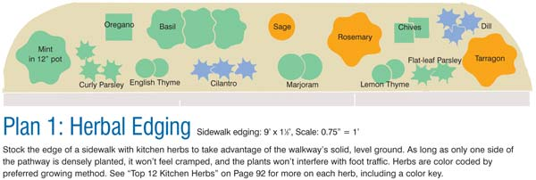
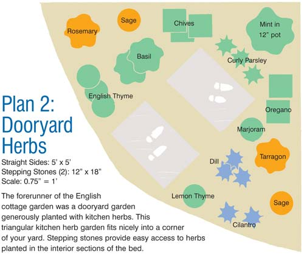
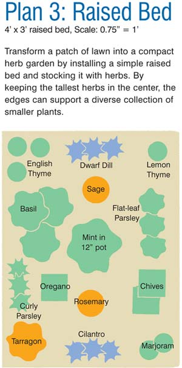
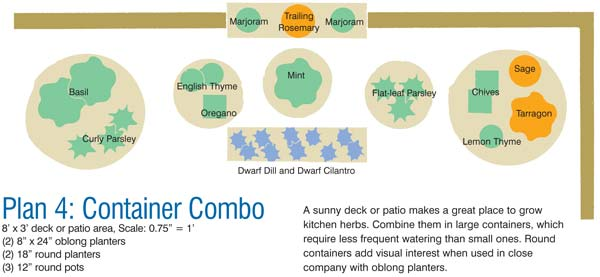
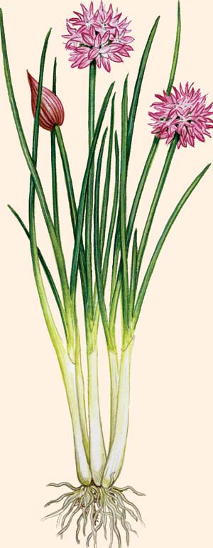

The stunning flavors of culinary herbs make them star players in a healthy diet, and the best way to make the most of big-flavor herbs is to grow them yourself. This article includes plans for four herb gardens, each designed to fit into a 12-square-foot area, to help you make the best use of space near your kitchen door. See Top 12 Kitchen Herbs for more on the featured herbs: basil, chives, cilantro, dill, marjoram, mint, oregano, parsley, rosemary, sage, tarragon and thyme.
You could grow kitchen herbs in a geometrical design dating from the days of medieval monasteries if you like, but there are easier ways to include culinary herbs in your landscape design. By following a few basic guidelines and choosing to grow the herbs you’re most likely to use, you can grow a generous supply of kitchen herbs in a surprisingly small space. Add some container herbs that are marginally hardy or prone to crowding out other plants, and you’re well on your way to a gourmet herb garden.
The first and most important step is to grow your herbs as close as possible to your kitchen door. “Accessing your kitchen herbs should be as easy as going to your pantry for the dried version,” says V.J. Billings, who grows herb plants by the thousands at Mountain Valley Growers in Squaw Valley, Calif. To find great places to grow herbs, simply walk out your back door and survey every space within 20 paces that gets at least a half day of full sun. As you plan, consider the times you will dash out to grab a handful of chives, dill or basil when it’s raining or something on the stove needs your attention. Having your herbs within easy reach of a walkway or well-placed steppingstones can also make a big difference.
Herbs need average or better soil and good drainage, but they are generally not as demanding as vegetables and flowers. With kitchen herbs, it’s better to make use of a convenient location than to move away from the house in search of better soil.
By now you probably have visions of your favorite cooking herbs dancing in your head. Gayle Sathre-Zimmerman, owner of Blossom Farm in Columbia Station, Ohio, suggests including a variegated plant, or one with dark leaves, to enhance the visual appeal of your herb garden. Thyme, sage and mint come in variegated versions, and basil varieties with deep purple leaves are as flavorful as those with green leaves.
Also be on the lookout for varieties with unusual textures and forms. For example, ‘Berggarten’ sage has broad, velvety gray-green leaves that give it a luminous presence in an herb garden.
Several of the top culinary herbs, such as dill, basil and cilantro, are fast growing annuals whose seeds can be easily sown directly in the garden. Most other cooking herbs are hardy perennials that come back every year. Perennial herbs can be grown from seed, too, but the seedlings require several months to reach picking size. Some herbs require starting with plants that were propagated from rooted stem cuttings. For example, mints that carry the subtle flavor of chocolate or pear are best purchased as plants, and the only tarragon worth having is French tarragon, which is always grown from rooted cuttings. To be sure you’re getting true French tarragon, taste a leaf before you buy. It should have a zippy licorice flavor.
Speaking of rooted cuttings, if you buy fresh mint, oregano or marjoram at the store, and you decide you’d like to grow it, by all means choose a few healthy sprigs and try growing them as rooted cuttings. Just pinch off all but the top three or four leaves, trim the base of the cutting back to green healthy tissue, plant the cutting in a pot of moist soil, then cover with a plastic bag for a few days. I have rooted oregano right in the garden by covering the cutting with a flowerpot for a week (the pot protects the little plant from sun until it has time to grow roots). My mint got its start as a supermarket sprig, too, and after four years in a large pot it’s still going strong.
Rosemary is not consistently winter hardy beyond Zone 7, and cold winter winds can damage oregano, sage and tarragon, even in areas where they’re rated hardy. The safest way to make sure your favorite perennial herbs survive winter is to move them to pots, allow them to become dormant, then keep them in a cold garage or outbuilding where temperatures seldom drop below 20 degrees. Or dig and store only rosemary, and surround your other perennial herbs with a 12-inch-tall wire cage filled with loose straw or pine needles. A loose pile of evergreen boughs arranged over the plants’ crowns also does an excellent job of protecting them from biting winter winds. Remove either form of winter protection about a month before the last expected frost.
You may want to mail order special strains of some culinary herbs, or wait until spring and shop for plants at local garden centers or herb farms. As you examine prospective adoptees, take a moment to check the pot to see how many plants are growing there. Last spring when I bought what was offered as a single sage plant, I found four nicely rooted cuttings in the pot, which were easy to pull apart and put out in individual planting holes. Small pots of basil often contain more than a half dozen little seedlings, which can be divided and transplanted, provided you shade them from the sun for a few days as they become accustomed to their new home.
If all of this talk of seeds and cuttings has you feeling confused, take a deep breath and relax. Your first venture into a kitchen herb garden is sure to be successful if you start with a simple planting plan like the ones shown here. Fill your garden with tried-and-true favorites, which are offered as collections by Mountain Valley Growers, Blossom Farm and many other herb growers. Start small, keep it simple, and you’re sure to be delighted by the fantastic flavors of your kitchen herbs.
The preferred methods to start these 12 herbs are indicated by the colors of their corresponding titles below and in the plans:
Green = sow herb seeds or use transplants
Blue = sow seeds only
Orange = use transplants only
BASIL
Seeds or seedlings of basil, a warm-season annual, can be planted at the same time as tomatoes. Pinch back flowering spikes to encourage new leaf production, and make a second planting from direct-sown seeds in early summer. The flavor is best when used fresh.
Selections: ‘Genovese’ is the gold standard for cooking; other varieties feature burgundy leaves, compact growth habits or foliage with frilled edges.
CHIVES
A mild-flavored perennial allium hardy to Zone 3, chives produce edible pink flowers in spring. Chives can be grown from seed, but it’s faster to start with plants. Keep leaves trimmed to prolong production, and divide and replant clumps in early fall. Can self seed too vigorously in cold climates. Preserve chives by freezing them.
Selections: Compact ‘Grolau’ (windowsill chives) is great for containers; ‘Grande’ features big, broad leaves.
CILANTRO
A fast-growing annual, cilantro can be planted twice a year, in spring and again in late summer. Cilantro is among the easiest herbs to start from seeds sown directly in the garden, but it suffers badly when transplanted. Plants are hardy to Zone 7. Leaves lose their flavor as the plants grow tall and develop flowers. Leaves are best used fresh. The ripe seeds are the spice known as coriander.
Selections: ‘Santo’ bolts later than other varieties; ‘Delfino’ has lacy, fernlike leaves.
DILL
This cool-season annual bears flavorful leaves when young, then quickly produces flowers and seeds. Plant seeds in spring and again in late summer, or allow the spring sowing to shed ripe seeds. Tall varieties grow to 4 feet tall, though there are also dwarf types. Leaves are best used fresh; seeds dry well.
Selections: Dwarf ‘Fernleaf’ is great for containers; ‘Vierling’ bears beautiful bloom clusters for flower bouquets.
MARJORAM
A tender perennial usually grown as an annual, marjoram has a low, mounding growth habit. New plants are easy to grow from seed or rooted stem tip cuttings. The flavor of the leaves resembles mild oregano. Marjoram leaves hold their flavor well when dried.
Selections: The species is easy to grow from seed or cuttings. Italian oregano is a marjoram-oregano cross with excellent flavor.
MINT
Mint strains and species vary in flavor, but all are hardy perennials to Zone 5, and sometimes Zone 4. Mint can be started from seed, but vegetatively propagated strains often have superior flavors. Most mints grow to less than 18 inches tall; all are aggressive spreaders best grown in containers. Clip back growing tips monthly to encourage new growth. Very easy to dry.
Selections: Peppermints (Mentha x piperita) and spearmints (Mentha spicata) are best for cooking; pineapple mint (Mentha suaveolens ‘Variegata’) has beautiful variegated leaves.
OREGANO
Oreganos vary in size, flavor and growth habit; all are easy to grow from seeds or rooted cuttings. Cold hardy outside to Zone 5, dormant oregano can be potted up and overwintered in an unheated garage even in colder climates. Dried leaves hold their flavor well.
Selections: Greek oregano (Origanum vulgare spp. hirtum) has the best flavor.
PARSLEY
A biennial hardy to Zones 5 or 6, parsley is often grown as a compact annual. Grow any parsley from direct-sown seed, though seeds are slow sprouters. Young plants can be set out as seedlings if roots are handled very gently. Flavor is best when used fresh.
Selections: Curly parsley is a lovely edging plant, but most cooks prefer the flat-leafed version, often called Italian parsley.
ROSEMARY
A woody perennial often hardy to Zone 7, rosemary can be pruned back, potted up and kept indoors through winter in cold climates. Superior rosemary cultivars are best purchased as plants. Varieties differ in size and flavor, though all produce pungent leaves and sturdy stems that can be used as skewers. Very easy to dry.
Selections: ‘Arp’ and ‘Hill Hardy’ tolerate more cold than other varieties. Try compact ‘Blue Boy’ in containers.
SAGE
This 20-inch tall woody perennial is hardy to Zone 5, but new plants should be started from rooted stem tip cuttings every other year. The species features gray-green leaves; variegated varieties are less cold tolerant and more petite. Very easy to dry.
Selections: Compact ‘Berggarten’ is great for tight spaces; ‘White Dalmatian’ features silvery leaves, and ‘Tricolor’ foliage has pink and white stripes.
TARRAGON
Hardy to Zone 3, French tarragon grows to 24 inches tall with stems that tend to sprawl. If a stem rests on the soil, covering it with soil often coaxes it into developing roots. In midsummer, cut back plants by half to stimulate new growth. A fine herb for flavoring vinegars, and easy to dry.
Selections: There is but one true French tarragon, which must be purchased as a plant. Nibble a leaf before you buy - it should have a zingy licorice flavor.
THYME
Often called English or French thyme, the best species for cooking grows to 12 inches tall and is hardy to Zone 4. Can be grown from seed, seedlings or rooted stem tip cuttings. Cut back blooming branches to increase production of leaves. Very easy to dry.
Selections: Upright, green-leafed French or English thyme (Thymus vulgaris) provide the best flavor; the variegated forms, including golden lemon thyme, are excellent in containers.
|
MICHAEL OTTEMAN/OTTEMAN ARTS Use One of These 4 Simple Garden Designs to Grow the 12 Best Kitchen Herbs: |
 BARBARA PLEASANT/MATTHEW T. STALLBAUMER The preferred methods to start these 12 herbs are indicated by the colors: Green = sow herb seeds or use transplants |
 BARBARA PLEASANT/MATTHEW T. STALLBAUMER The preferred methods to start these 12 herbs are indicated by the colors: Green = sow herb seeds or use transplants |
|
 BARBARA PLEASANT/MATTHEW T. STALLBAUMER The preferred methods to start these 12 herbs are indicated by the colors: Green = sow herb seeds or use transplants |
 BARBARA PLEASANT/MATTHEW T. STALLBAUMER The preferred methods to start these 12 herbs are indicated by the colors: Green = sow herb seeds or use transplants |
 ELIZABETH DOWLE/QUARTO, INC. Chives, a culinary herb. |